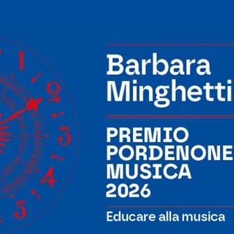

ven 30 ott · dalle 18:30
L'opera lirica per tutti: il futuro in scena
Appuntamento a Teatro per una serata speciale dedicata all’opera e alle nuove generazioni di artisti e di pubblico, insieme a Barbara Minghetti assegnataria del Premio Pordenone Musica 2026. Barbara Minghetti da oltre trent’anni lavora per avvicinare pubblici diversi all’opera…
 Indicazioni
Indicazioni
- Costi e prenotazioni
- Costo non indicato · Prenotazione non indicata
- Programma
- Programma da verificare. Apri la fonte ufficiale per orari e possibili aggiornamenti.
- In caso di maltempo
- Nessuna indicazione specifica pubblicata.
- Note
- Acquisito automaticamente dalla fonte.
L’EVENTO
Descrizione completa
Appuntamento a Teatro per una serata speciale dedicata all’opera e alle nuove generazioni di artisti e di pubblico, insieme a Barbara Minghetti assegnataria del Premio Pordenone Musica 2026. Barbara Minghetti da oltre trent’anni lavora per avvicinare pubblici diversi all’opera lirica e per sostenere la vitalità del teatro musicale attraverso la formazione, la partecipazione e la progettazione culturale. Una visione che ha trovato in Opera Domani una delle sue espressioni più significative: il progetto, sviluppato da Minghetti nell’ambito delle attività di AsLiCo, ha trasformato il rapporto tra il giovane pubblico e il teatro musicale, coinvolgendo scuole, insegnanti e famiglie e facendo dei bambini non soltanto spettatori, ma parte dello spettacolo: preparati in classe e chiamati in teatro a cantare, ascoltare, partecipare. A Pordenone, questa presenza dura da diciotto anni e ha portato centinaia di migliaia di bambini, ragazzi e giovani a incontrare l’opera attraverso una partecipazione diretta, capace di creare un rapporto concreto tra scuola e teatro. È una delle esperienze che meglio rappresentano un’attività più ampia, sviluppata da Barbara Minghetti in diversi contesti italiani e all’estero. È questo impegno che il Premio Pordenone Musica intende riconoscere a Barbara Minghetti: la capacità di guardare all’opera non soltanto come patrimonio da conservare e trasmettere, ma come un genere vivo, che continua a parlare al presente e costruire il proprio futuro attraverso nuovi ascoltatori, nuovi interpreti e nuove forme di partecipazione. La serata prende spunto da questa idea e mette in relazione dimensioni diverse della vita musicale: la presenza dei bambini che hanno partecipato a Opera Domani , le voci dei giovani cantanti e il patrimonio del grande repertorio operistico. La conversazione con Barbara Minghetti, accompagnata da immagini e testimonianze, allargherà lo sguardo oltre l’esperienza pordenonese per raccontare alcune delle iniziative che hanno segnato il suo lavoro, da Opera Domani ai progetti di partecipazione culturale, fino a esperienze come Verdi Off , nate per portare l’opera e il teatro fuori dai luoghi e dalle modalità tradizionali della rappresentazione. Il canto dei bambini – delle Scuole “De Amicis” e “Gozzi” di Pordenone -, le voci dei giovani artisti e la partecipazione del pubblico restituiscono così il senso di un’idea di teatro nella quale l’opera diventa un luogo d’incontro tra generazioni, competenze e sensibilità diverse. Non un’esperienza rivolta soltanto a chi già conosce il melodramma, ma una possibilità di incontro con un patrimonio musicale che può essere riscoperto, condiviso e trasmesso. Il finale collettivo del Va, pensiero , affidato ai bambini, ai giovani artisti e al pubblico, raccoglie idealmente questo significato: una pagina del repertorio che diventa voce comune e che richiama l’idea di un’opera capace di rinnovarsi proprio nel rapporto con chi la ascolta, la interpreta e la vive.
Programma:
Giuseppe Verdi
«Tutto è gioia, tutto è festa», da Rigoletto
Giacomo Puccini
«O sole! Vita! Eternità», da Turandot
«Va, pensiero, sull’ali dorate», da Nabucco Informazioni e biglietti Biglietteria Teatro Verdi: 0434 247624 / biglietteria@teatroverdipordenone.it
IL PROGRAMMA
Programma e orari
Appuntamenti raccolti dalle fonti elencate. Dove manca un orario, non è ancora disponibile in questa scheda.
Programma pubblicato
- Dal 2026-10-30 al 2026-10-30
INFORMAZIONI UTILI
Prima di partire
- Controllare la fonte prima di partire.
ORGANIZZAZIONE